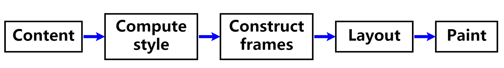

原文连接:https://www.cnblogs.com/xiahj/p/11777786.html
目录
前言
“回流（重排）”和“重绘”基本上算是前端的高频词之一，你可以在各个文章及面试题中见到，我们在讨论这个词的时候，其实讨论的是浏览器的渲染流程。
所以在讨论“回流重绘”之前，我们还需要掌握一些知识；在它之中，我们还需要更深入一点；在这之后，我们还要懂得怎么去把理论结合到项目实践中去。
通过这篇文章，你可以学习到的知识：
1、追本溯源，“回流”和“重绘”这个词是如何引出的，在了解这两个词之前我们还需要了解什么
2、浏览器的渲染流程，“回流”和“重绘”的原理
3、优化浏览器渲染性能，减少“回流”和“重绘”，动手将这些优化应用到实际开发中
浏览器的渲染引擎
浏览器的主要组件有：用户界面、浏览器引擎、渲染引擎、网络、用户界面后端、JavaScript解释器、数据存储。
浏览器的主要功能就是向服务器发出请求，在浏览器窗口中展示您选择的网络资源。浏览器在解析HTML文档，将网页内容展示到浏览器上的流程，其实就是渲染引擎完成的。
渲染流程
我们在这里讨论Gecko和Webkit这两种渲染引擎，其中Firefox 使用的是 Gecko，这是 Mozilla 公司“自制”的呈现引擎。而 Safari 和 Chrome 浏览器使用的都是 WebKit。
WebKit 渲染引擎的主流程：

Mozilla 的 Gecko渲染引擎的主流程：

从图 3 和图 4 可以看出，虽然 WebKit 和 Gecko 使用的术语略有不同，但整体的渲染流程是基本相同的，这里我们参照Webkit引擎来概况一下：
- 解析HTML Source，生成DOM树
- 解析CSS，生成CSSOM树
- 将DOM树和CSSOM树结合，去除不可见元素，生成渲染树(Render Tree)
- Layout(布局):根据生成的渲染树，进行布局(Layout)，得到节点的几何信息（位置，大小）
- Painting(重绘):根据渲染树以及回流得到的几何信息，将 Render Tree 的每个像素渲染到屏幕上
渲染树与渲染对象
渲染树(render tree)是由可视化元素按照其显示顺序而组成的树，也是文档的可视化表示。它的作用是让您按照正确的顺序绘制内容。
生成渲染树

为了构建渲染树，浏览器主要完成了以下工作：
- 从DOM树的根节点开始遍历每个可见节点。
- 某些节点不会被渲染输出，比如
script、link、meta等标签节点 - 通过css隐藏的节点会被忽略，比如“
display: none”。但是注意，visibility: hidden是会被渲染的（渲染成一个空框），因为它仍占据布局空间
- 对于每个可见的节点，找到CSSOM树中对应的规则，并应用它们。
- 根据每个可见节点以及其对应的样式，组合生成渲染树。
渲染对象
Firefox 将渲染树中的元素称为“框架”。WebKit 使用的术语是渲染器(renderer)或渲染对象(render object)。
每一个渲染对象都代表了一个矩形区域，通常对应相关节点的css框，包含宽度、高度和位置等几何信息。框的类型受“display”样式属性影响，根据不同的 display 属性，使用不同的渲染对象(如 RenderInline、RenderBlock、RenderListItem 等对象)。
WebKits RenderObject 类是所有渲染对象的基类，其定义如下：
class RenderObject{
virtual void layout();
virtual void paint(PaintInfo);
virtual void rect repaintRect();
Node* node; //the DOM node
RenderStyle* style; // the computed style
RenderLayer* containgLayer; //the containing z-index layer}我们可以看到，每个渲染对象都有 layout 和 paint方法，分别对应了回流和重绘的方法。
回流

渲染对象在创建完成并添加到渲染树时，是将DOM节点和它对应的样式结合起来，并不包含位置和大小信息。
我们还需要通过 Layout 布局阶段，来计算它们在设备视口(viewport)内的确切位置和大小，计算这些值的过程称为回流、布局或重排。
HTML 采用基于流的布局模型，从根渲染对象（即<html>）开始，递归遍历部分或所有的框架层次结构，为每一个需要计算的渲染对象计算几何信息，大多数情况下只要一次遍历就能计算出几何信息。但是也有例外，比如<table>的计算就需要不止一次的遍历。
全局布局和增量布局
全局布局指触发了整个render tree范围的布局，一般是同步触发的，触发原因可能包括：
- 影响所有渲染元素的全局样式更改，例如字体大小更改。
- 屏幕大小调整。
增量布局是指对标记为“dirty”的渲染对象进行布局。它一般是异步执行的，浏览器将增量布局的“reflow 命令”加入队列，而调度程序会触发这些命令的批量执行。
但是请求样式信息（例如offsetHeight,
getBoundingClientRect等）的脚本可同步触发增量布局。
Note:
dirty bit
为避免对所有细小更改都进行整体布局，浏览器采用了一种“dirty bit”的系统。如果某个渲染对象发生了更改，或者将自身及其子代标注为“dirty”，则需要进行布局。
"回流"还是"重排"？
本质上它们是同样的流程，只是在不同浏览器引擎下的“说法”有所差异。
Gecko 将视觉格式化元素组成的树称为 "
Frame tree"框架树。每个元素都是一个框架；
对于元素的放置，将其称为 "Reflow"回流。WebKit 使用的术语是 "
Render Tree"渲染树，它由"Render Objects"组成。对于元素的放置，WebKit 使用的术语是 "Layout"布局（或Relayout重排）
重绘
在计算出节点可见性、它们的计算样式以及几何信息后，我们还需要将渲染树中的每个节点，转换成屏幕上的实际像素。这一步通常称为“重绘”。
重绘是填充像素的过程。它涉及绘出文本、颜色、图像、边框和阴影，基本上包括元素的每个可视部分。在重绘阶段，系统会遍历渲染树，并调用渲染对象的“paint”方法，将渲染对象的内容显示在屏幕上。
和布局一样，重绘也分为全局（绘制整个render tree）和增量两种。
绘制顺序
绘制的顺序其实就是元素进入堆栈样式上下文的顺序。这些堆栈会从后往前绘制，因此这样的顺序会影响绘制。块渲染对象的堆栈顺序如下：
1、背景颜色
2、背景图片
3、边框
4、子代
5、轮廓
何时触发回流和重绘
触发回流(reflow)：
回流这一阶段主要是计算节点的位置和几何信息，那么当页面布局和几何信息发生变化的时候，就需要回流.
改变这些属性会触发回流：
- 盒模型相关的属性:
width，height，margin，display，border等 - 定位属性及浮动相关的属性:
top,position,float等 - 改变节点内部文字结构也会触发回流:
text-align,overflow,font-size,line-height,vertival-align等
以及进行以下流程或操作：
- 页面一开始渲染的时候
- 添加或删除可见的DOM元素，进行DOM操作等
- 内容发生变化，比如文本变化或图片被另一个不同尺寸的图片所替代
- 浏览器的窗口尺寸变化（因为回流是根据视口的大小来计算元素的位置和大小的）
- css伪类激活
- 进行获取布局信息的操作，比如
offsetWidth、offsetHeight、clientWidth、clientHeight、width、height、scrollTop、scrollHeight,getComputedStyle,getBoundingClientRect等
Note: 具体属性及操作可以访问这个网站：What forces layout / reflow
触发重绘：
重绘是一个元素外观的改变所触发的浏览器行为，例如改变visibility、outline、background-color等属性，这些属性只是影响元素的外观，风格，而不会影响布局的。
浏览器会根据元素的新属性重新绘制，使元素呈现新的外观。重绘不会带来重新布局，并不一定伴随回流。
Note: 如果想知道更改任何指定 CSS 属性将触发回流还是重绘，请查看 CSS 触发器
我们根据渲染的流程可知，回流一定会触发重绘，而重绘不一定会回流
渲染性能优化

回流和重绘的代价是比较昂贵的，渲染性能优化，就是要尽可能减少Layout回流和Paint重绘发生的次数，将回流和重绘的影响范围限制在单独的图层之内
合并多次布局操作
我们可以合并多次对DOM和样式的修改，然后一次处理掉，以此来最小化回流和重绘操作，比如：
// bad
const el = document.getElementById('test');
el.style.margin = '5px';
el.style.width = '100px';
el.style.borderRight = '2px';例子中，有三个样式属性被修改了，每一个都会影响元素的几何结构，引起回流。（当然，大部分现代浏览器都对其做了优化，只会触发一次。但是如果在旧版的浏览器或者在上面代码执行的时候，有其他代码访问了布局信息，那么就会导致三次回流）
我们合并所有的布局操作，然后统一处理，比如这样：
// good
const el = document.getElementById('test');
el.style.cssText += 'margin: 5px;width: 100px;border-right: 2px; '减少或避免强制同步布局
上面我们提到，访问一些属性（就是offsetWidth那一堆属性）会导致浏览器强制清空队列，进行强制同步布局。实际使用中可以尽量避免，如果不能避免，也应该减少。
比如我们想批量将一些标签的宽度设为某个box的宽度，我们可能会写成下面这样：
// bad
for (let i = 0; i < elment.length; i++) {
elment[i].style.width = box.offsetWidth + 'px';
}这段代码看上去问题不大，但是在每次循环的时候，都会去读取box的offsetWidth，导致浏览器每次都会因强制同步布局而触发回流，造成了很大的性能问题。
类似这这情况，我们可以把读取到的offsetWidth进行缓存：
// good
const width = box.offsetWidth;
for (let i = 0; i < element.length; i++) {
element[i].style.width = width + 'px';
}使用 transform 和 opacity 来实现动画
最佳的性能渲染流程，就是直接避开回流和重绘，只运行Composite合成这一操作。
目前可以有合成器单独处理的属性有两个：
transforms 和 opacity
比如我们可以使用translate代替left、top。
使用opacity代替visibility等
简化绘制的复杂度、减小绘制区域
除 transform 或 opacity 属性之外，更改任何属性始终都会触发绘制。
绘制通常是像素管道中开销最大的部分；应尽可能避免绘制。
通过层的提升来减少绘制区域
绘制并非总是绘制到内存中的单个图像。事实上，在必要时浏览器可以绘制到多个图像或合成器层，各个层可以在彼此的上面处理并合成，以创建最终图像。
创建新层的最佳方式是使用 will-change CSS 属性。
此方法在 Chrome、Opera 和 Firefox 上有效，并且通过 transform 的值将创建一个新的合成器层：
.moving-element {
will-change: transform;
}对于不支持 will-change 但受益于层创建的浏览器，例如 Safari 和 Mobile Safari，需要开启GPU加速来强制创建一个新层：
.moving-element {
transform: translateZ(0);
}优化或减少动画编排
减少绘制区域往往是编排您的动画和变换，使其不过多重叠，或设法减少动画编排，避免对页面的某些部分设置动画。
降低绘制的复杂性
一些css属性的绘制比其他绘制的开销更大。例如，绘制任何涉及模糊（例如shadow）的元素所花的时间将比绘制一个border的时间要长。
实际开发中，我们要确定可否使用一组开销更小的样式，或者替代方式来实现最终结果。
让复杂的布局“离线”
对于复杂的动画，或者频繁触发回流的元素，我们
创建一个documentFragment或div，在它上面应用所有DOM操作，最后再把它添加到window.document。
也可以在一个display:none的元素上进行操作，最终把它显示出来。因为display:none上的DOM操作不会引发回流和重绘。
也可以使用绝对定位，让它脱离文档流，从而避免引起父元素以及后续元素的频繁回流。
其他
避免使用table布局
我们已经在上面说过，<table>的计算需要不止一次的遍历，table是可以影响之前已经进入的DOM元素的显示的元素。即使一些小的变化和会导致table中所有其他节点回流。